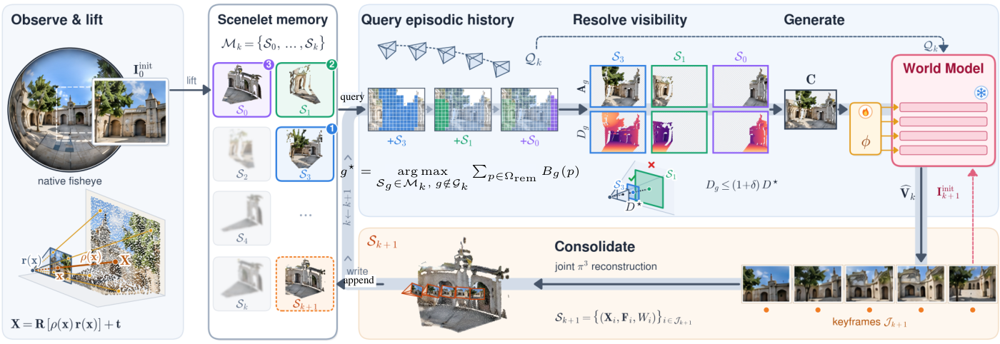
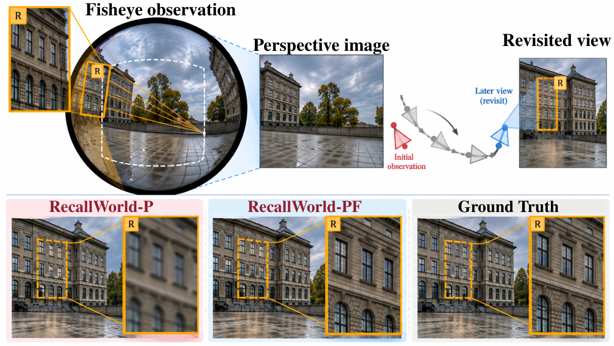
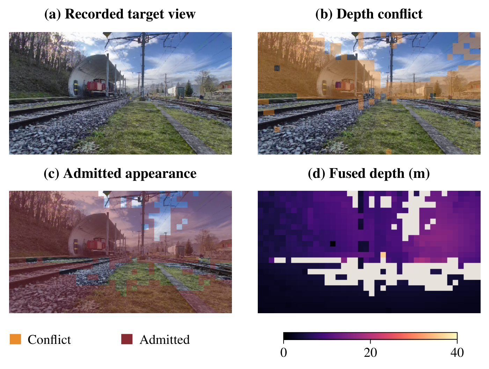
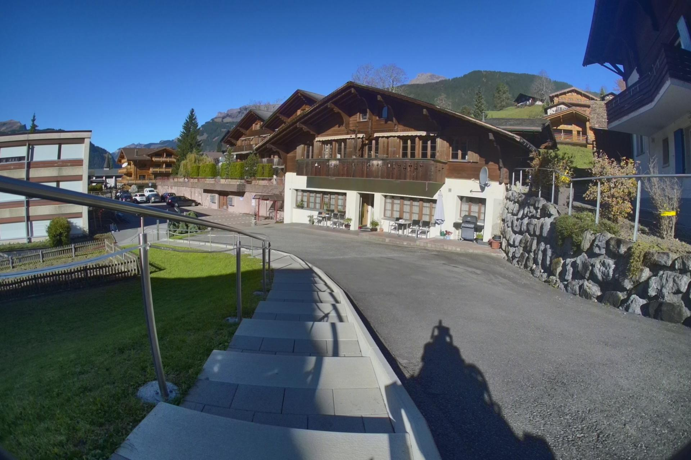
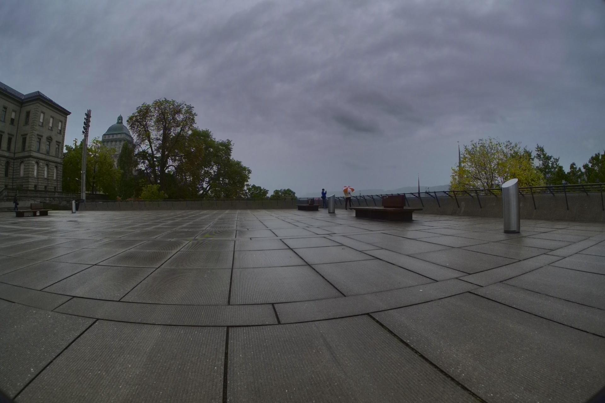
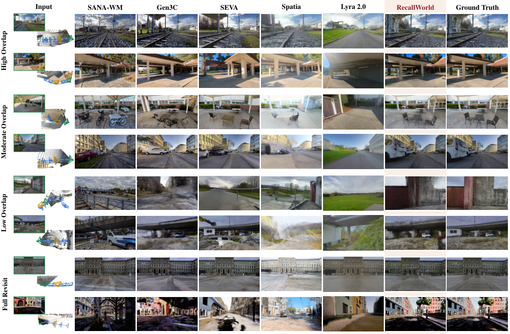

Street corner
RecallWorld
Ground Truth
The videos could not load. Please refresh to retry.
Starting Image
The video could not load. Please refresh to retry.
Explore more worlds below
An embodied video world model must preserve the structure and appearance of previously observed places as exploration moves beyond its recent context. This requires efficiently representing, storing, and associating both observations and generated views in persistent memory. We introduce , which consolidates short multi-view episodes into Scenelets: observations within an episode are reconstructed jointly, with geometric estimates retained independently across episodes. This intermediate consolidation granularity exploits local multi-view consistency without coupling an ever-growing generated history into one shared reconstruction. Calibrated rays give this memory a common representation for perspective and native fisheye observations, allowing wide-field scene content to be retained while generation remains in perspective image space. Coverage-based querying retrieves complementary Scenelets from accumulated history, and geometric visibility is resolved before their appearance conditions the next segment. Starting from a single source image, completed generated segments extend this memory throughout exploration, making earlier episodes available again when their surfaces are revisited. Across public ground-robot trajectories and real scene captures, we examine persistence under a shared perspective input, with controlled studies of consolidation granularity, memory access, projected visibility, and additional wide-field coverage.
A place should remain in memory after it leaves the frame. turns completed video segments into 3D Scenelets, retaining their geometry and appearance to guide generation when the camera returns.

Build local Scenelets, retrieve complementary views, and project their visible surfaces into the next camera poses.
Reconstruct nearby views jointly. Retain each episode's geometry independently as exploration continues.
Select complementary Scenelets that cover the next target views, bringing earlier places back into context.
Combine appearance only after resolving depth conflicts, preserving which surface lies in front.
Perspective and fisheye observations. One spatial memory. retains observed geometry and appearance beyond the initial perspective field of view, so wider fisheye coverage can guide generation as those surfaces enter the camera's view.

Remember what the initial perspective image misses. On GrandTour, retains the outlined façade from the wider fisheye observation; uses only its perspective portion.
Memory must respect what the camera can see. resolves depth conflicts before fusing appearance, preventing farther projections from replacing an occluding front surface.

Front surfaces stay in front. Our visibility guidance resolves conflicting projections before combining appearance. This GrandTour example shows the resulting spatial condition.
Compare RecallWorld and other methods with Ground Truth.
The videos could not load. Please refresh to retry.
The videos could not load. Please refresh to retry.
The videos could not load. Please refresh to retry.
The videos could not load. Please refresh to retry.
The videos could not load. Please refresh to retry.
The videos could not load. Please refresh to retry.
The videos could not load. Please refresh to retry.
The videos could not load. Please refresh to retry.
The videos could not load. Please refresh to retry.
Calibrated spatial memory turns fisheye observations into perspective videos on GrandTour. Compare SANA-WM using raw-fisheye or rectified inputs.

The videos could not load. Please refresh to retry.

The videos could not load. Please refresh to retry.

Revisit comparisons on GrandTour, DL3DV and TartanGround. Rows show high, moderate and low overlap settings, followed by full revisits along out-and-back paths. Input (left) shows the source image and camera path for each setting. Blue: trajectory; green: source; golden: revisit. target views (right) compare SANA-WM, Gen3C, SEVA, Spatia, Lyra 2.0, and Ground Truth.
This work was completed during an internship at Amazon. We thank Ziyang Long, Amin Kheradmand, David Stafford, Yen-Liang Lin, Shifan Zhu, Yun He, Guy Satat, Sravan Sripada, and Prakriti Chintalapoodi for helpful discussions and feedback on this work.